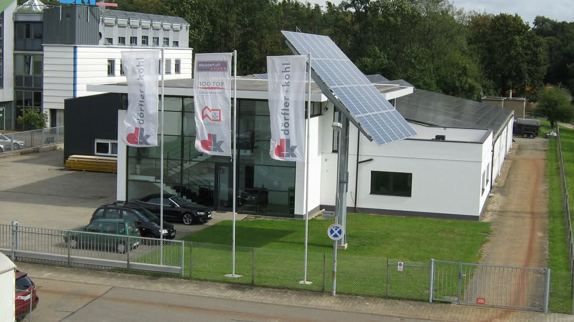

Graben-Neudorf
Dach.
Fassade.
Solar.
Die öffentlich genannten Leistungsfelder von Dörfler + Kohl: Industriebau, Flachdach, Steildach, Fassade und Solar.
Leistungen ansehen ↓Ottostraße 2 · Graben-NeudorfDachdeckerbetrieb

Leistungsfelder
Auf den Punkt gebracht.
Die Seite verzichtet bewusst auf allgemeine Versprechen und macht stattdessen die fünf öffentlich dokumentierten Themen sofort auffindbar.
Industriebau
Flachdach
Steildach
Fassade
Solar
Eine Website, die nicht nur die Branche zeigt – sondern den Betrieb.
Kontakt
Projekt im Blick.
Kontakt im Griff.
Die öffentlich angegebenen Kontaktdaten sind direkt in den neuen Auftritt eingebunden.
Telefon+49 7255 71880
E-Mailinfo@doerfler-kohl.de
AdresseOttostraße 2
76676 Graben-Neudorf
76676 Graben-Neudorf
[NEEDS INPUT: Anfrageablauf, Erreichbarkeit und rechtliche Angaben vor Veröffentlichung bestätigen.]